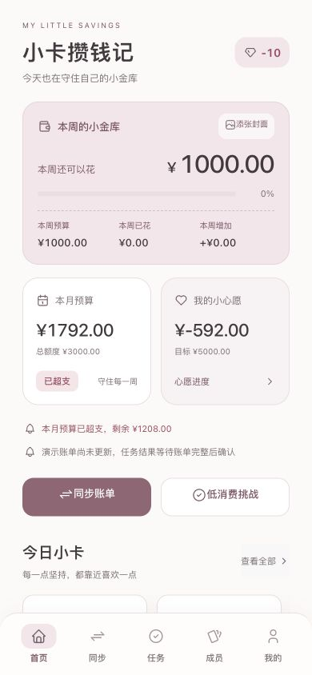
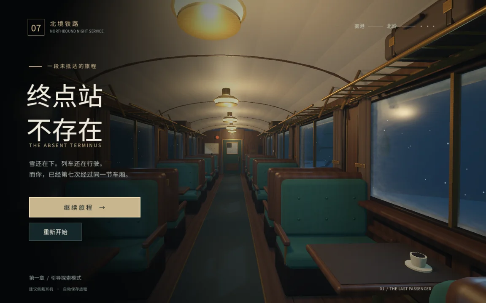
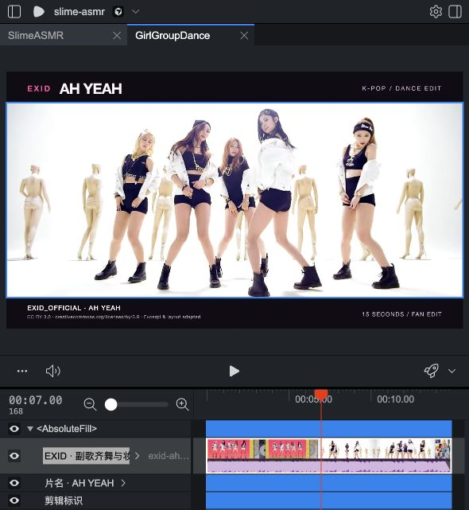

小卡攒钱记
把预算、消费和收藏做成一个有持续反馈的日常系统。
GitHubPERSONAL WORKS · 2026
你好，我是小七。
把想法做成网页、游戏和动画。
我对网页、游戏和动画都感兴趣。写代码对我来说像搭积木：先找到一个有趣的玩法，再把画面、交互和细节一点点补上。
这里放着我最近完成和持续打磨的作品。每个项目都从一个问题开始，最后变成一次真实的尝试。
六个项目，三种媒介。
从实用工具到有故事的世界。

把预算、消费和收藏做成一个有持续反馈的日常系统。
GitHub输入预算、时间和食材，得到一份真正能做的菜单。
GitHub
一列穿过三个年代的雪夜列车。寻找零件，修复广播，决定终点。
GitHub用星座、MBTI 和偏好，找到和你最像的 K-pop 成员。
GitHub在雨夜老宅完成一条短逃生链，躲开奶奶，找到最后一把钥匙。
GitHub
用 Remotion 做人物、节奏和镜头的连续动画预览。
GitHub下一件作品